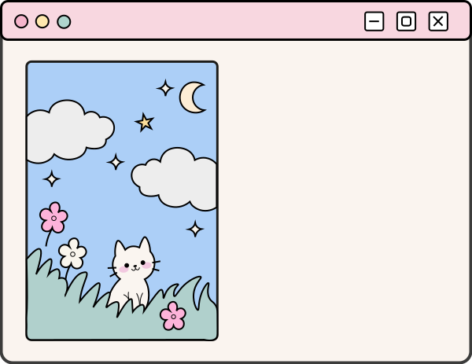
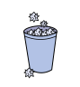

Welkom!
Tekenen is altijd een hobby geweest waar ik veel plezier uit haalde, maar de laatste tijd teken ik helaas minder dan vroeger. Met deze website wil ik mijn liefde voor tekenen weer terugvinden en anderen inspireren om hun creativiteit te ontdekken.
